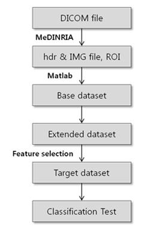
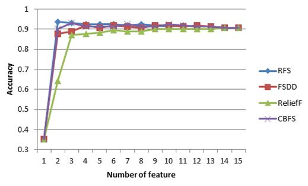

|
1. Introduction
A Diffusion Tensor Image (DTI) is an in vivo image which describes extracellular structures by measuring the diffusion of water molecules. It captures axonal movement and orientation using echo-planar imaging and is capable of providing critical information for evaluating lesions and structural damage in the central nervous system, which is important for the prediction of spinal cord injury and for assessment of patients who are recovering from such injuries. In this study, we aimed to classify healthy individuals and patients using fractional anisotropy (FA) values within regions of interest. We abstract FA values from patients with chronic cervical spinal cord injuries and healthy controls using DTI data. We divided each cervical spinal cord slice into four directions (anterior, posterior, left, and right) and calculate FA values. These are resource to build the dataset for our study. We also aimed to classify spinal cord slices into normal and patient. We deploy feature selection and classification schemes to predict/classify injured spinal cord. The proposed method yields over 90% accuracy and can be used to support clinical examination.

Figure1. Preview of the classification analysis procedure for the new dataset
Figure2. Divided spinal cord regions (Red: Posterior, Green: Anterior, Blue: Left, Yellow: Right)

Figure3. The graph of the accuracy by each feature using KNN algorithms with k = 5
3. Download Datasets
Abbreviation:
- Posterior (P), Anterior (A), Left (L), and Right (R).
- Person ID: Patient (P), Normal Control (N)
- Class Name: Patient (0), Normal Control (1)
| Dataset | Column Description |
| BaseDataset | Four features: Person ID, Class Name, P, A, L, R |
| ExtendedDataset | Fifteen features: Person ID, Class Name, P,A,L,R,(P,A),(P,L),(P,R),(A,L),(A,R),(L,R),(P,A,L),(A,L,R),(P,A,R),(P,L,R),(P,A,L,R) |
| FS_AppliedDataset | Two features: Person ID, Class Name, (A,L,R), (A,R) |
4. Citation Request:
Bunheang Tay, Jung Keun Hyun, Sejong Oh, The machine learning approach for specification of spinal cord injury using the fractional anisotropy value from diffusion tensor image
|